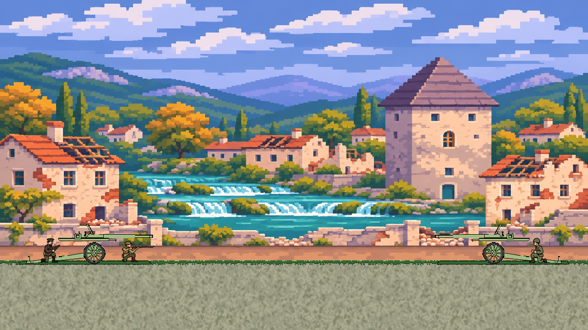
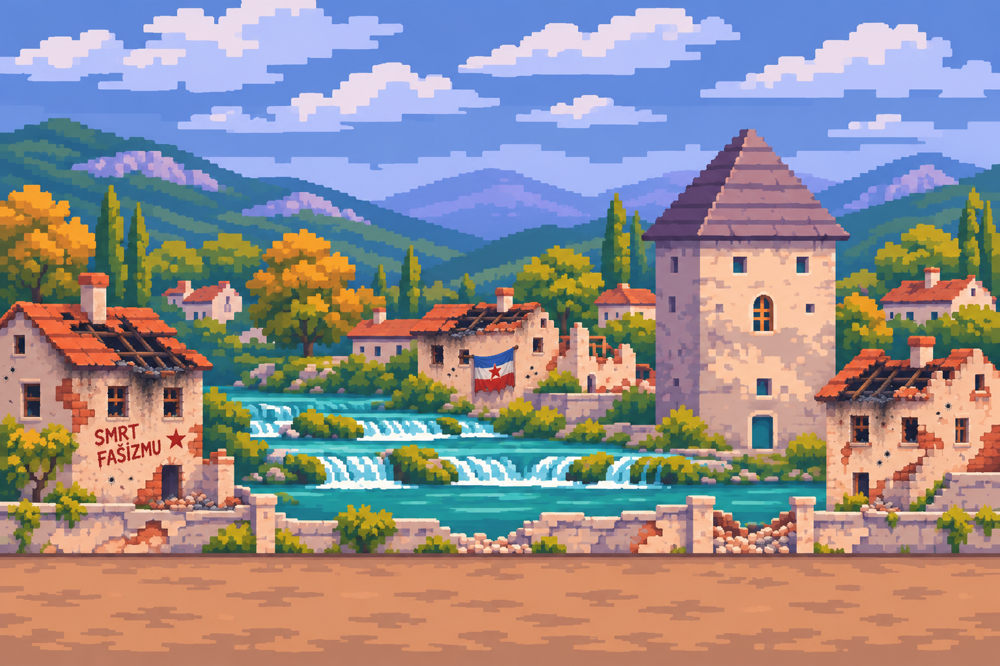
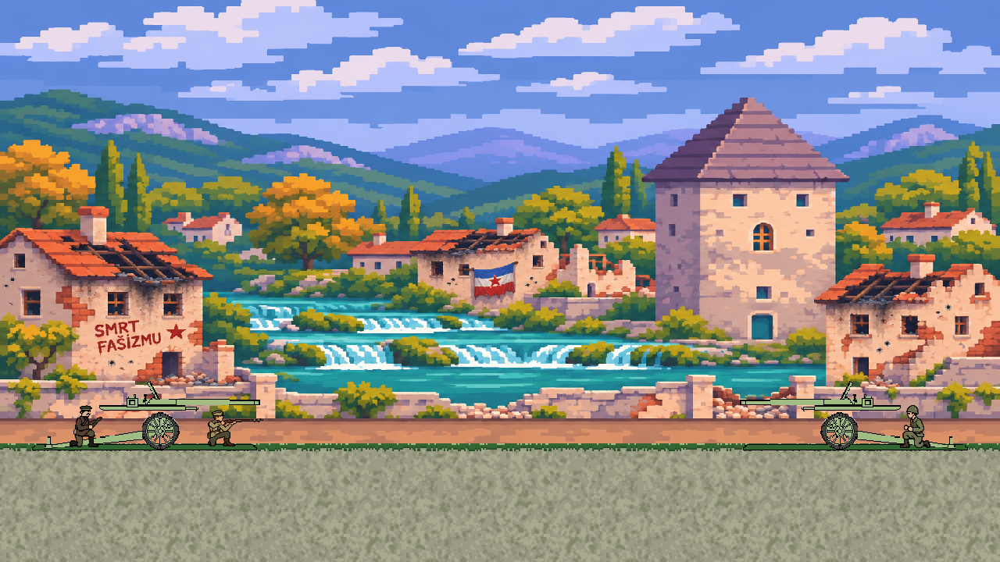

B · prethodna proba


Ista finoća piksela, sa partizanskim grafitima, zastavom, nagorelim zidovima i tragovima metaka. Ovo je proba ratne atmosfere, bez prihvatanja konačnog izgleda ili ugradnje u igru.


